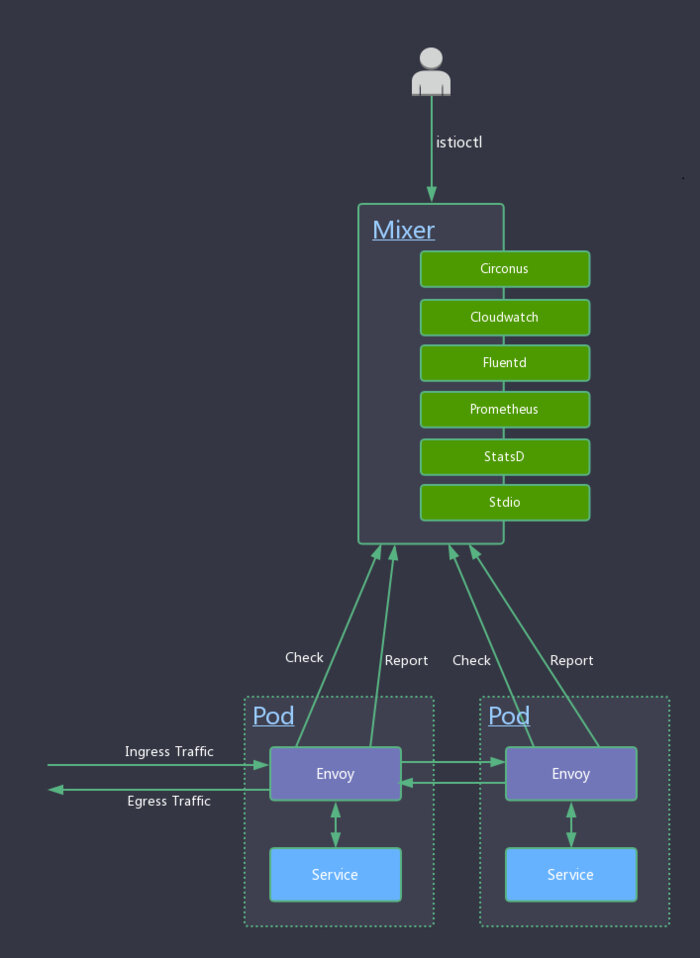

本文系转载，作者：郑伟，小米信息部技术架构组
本系列文章主要从源码（35e2b904）出发，对istio做深入剖析，让大家对istio有更深的认知，从而方便平时排查问题。不了解Service Mesh和Istio的同学请先阅读敖小剑老师如下文章进行概念上的理解：
本文主要对istio在ubuntu16.04下环境搭建做简单介绍，Mac用户和其他linux发行版用户请根据bash脚本做相应调整。
概念介绍
Mixer提供三个核心功能：
- 前置条件检查（Precondition Checking）：某一服务响应外部请求前，通过Envoy向Mixer发送Check请求，检查该请求是否满足一定的前提条件，包括白名单检查、ACL检查等。
- 配额管理（Quota Management）：当多个请求发生资源竞争时，通过配额管理机制可以实现对资源的有效管理。
- 遥测报告上报（Telemetry Reporting）：该服务处理完请求后，通过Envoy向Mixer上报日志、监控等数据。
要深入了解Mixer，我们先对如下几个概念做介绍：
Attribute（属性）
大部分attributes由Envoy提供。Istio用attributes来控制服务在Service Mesh中运行时行为。attributes是有名称和类型的元数据，用来描述入口和出口流量和流量产生时的环境。attributes携带了一些具体信息，比如：API请求状态码、请求响应时间、TCP连接的原始地址等。
RefrencedAttributes（被引用的属性）
refrencedAttributes是Mixer Check时进行条件匹配后被使用的属性的集合。Envoy向Mixer发送的Check请求中传递的是属性的全集，refrencedAttributes只是该全集中被应用的一个子集。
举个例子，Envoy某次发送的Check请求中发送的attributes为{request.path: xyz/abc, request.size: 234,source.ip: 192.168.0.1}，如Mixer中调度到的多个adapters只用到了request.path和request.size这两个属性。那么Check后返回的refrencedAttributes为{request.path: xyz/abc, request.size: 234}。
为防止每次请求时Envoy都向Mixer中发送Check请求，Mixer中建立了一套复杂的缓存机制，使得大部分请求不需要向Mixer发送Check请求。
request.path: xyz/abc
request.size: 234
request.time: 12:34:56.789 04/17/2017
source.ip: 192.168.0.1
destination.service: example
属性词汇由[_.a-z0-9]组成，其中.为命名空间分隔符，所有属性词汇可以查看这里，属性类型可以查看这里。
Adapter（适配器）
Mixer是一个高度模块化、可扩展组件，内部提供了多个适配器(adapter)。
Envoy提供request级别的属性（attributes）数据。
adapters基于这些attributes来实现日志记录、监控指标采集展示、配额管理、ACL检查等功能。Istio内置的部分adapters举例如下：
- circonus：一个微服务监控分析平台。
- cloudwatch：一个针对AWS云资源监控的工具。
- fluentd：一款开源的日志采集工具。
- prometheus：一款开源的时序数据库，非常适合用来存储监控指标数据。
- statsd：一款采集汇总应用指标的工具。
- stdio：stdio适配器使Istio能将日志和metrics输出到本地，结合内置的ES、Grafana就可以查看相应的日志或指标了。

Template（模板）
对于一个网络请求，Mixer通常会调用两个rpc：Check和Report。不同的adapter需要不同的attributes，template定义了attributes到adapter输入数据映射的schema，一个适配器可以支持多个template。一个上报metric数据的模板如下所示：
apiVersion: "config.istio.io/v1alpha2"
kind: metric
metadata:
name: requestsize
namespace: istio-system
spec:
value: request.size | 0
dimensions:
source_service: source.service | "unknown"
source_version: source.labels["version"] | "unknown"
destination_service: destination.service | "unknown"
destination_version: destination.labels["version"] | "unknown"
response_code: response.code | 200
monitored_resource_type: '"UNSPECIFIED"'
模板字段的值可以是字面量或者表达式，如果时表达式，则表达式的值类型必须与字段的数据类型一致。
Mixer的配置模型
Mixer的yaml配置可以抽象成三种模型：Handler、Instance、Rule 这三种模型主要通过yaml中的kind字段做区分，kind值有如下几种：
- adapter kind：表示此配置为Handler。
- template kind：表示此配置为Template。
- “rule”：表示此配置为Rule。
Handler
一个Handler是配置好的Adpater的实例。Handler从yaml配置文件中取出adapter需要的配置数据。一个典型的Promethues Handler配置如下所示：
apiVersion: config.istio.io/v1alpha2
kind: prometheus
metadata:
name: handler
namespace: istio-system
spec:
metrics:
- name: request_count
instance_name: requestcount.metric.istio-system
kind: COUNTER
label_names:
- destination_service
- destination_version
- response_code
对于Handler而言，{metadata.name}.{kind}.{metadata.namespace}是其完全限定名（Fully Qualified name），上述Handler的完全限定名是handler.prometheus.istio-system，完全限定名是全局唯一的。
adapter的配置信息定义在spec段中，每个adapter配置的格式都有所区别，可以从这里查看指定的adapter配置格式。上述Handler中引用了requestcount.metric.istio-system这个Instance。
Instance
Instance定义了attributes到adapter输入的映射，一个处理requestduration metric数据的Instance配置如下所示：
apiVersion: config.istio.io/v1alpha2
kind: metric
metadata:
name: requestduration
namespace: istio-system
spec:
value: response.duration | "0ms"
dimensions:
destination_service: destination.service | "unknown"
destination_version: destination.labels["version"] | "unknown"
response_code: response.code | 200
monitored_resource_type: '"UNSPECIFIED"'
上述Instance的完全限定名是requestduration.metric.istio-system，Handler和Rule可以通过这个名称对此Instance进行引用。
Rule
Rule定义了一个特定的Instance何时调用一个特定的Handler，一个典型的Rule配置如下所示：
apiVersion: config.istio.io/v1alpha2
kind: rule
metadata:
name: promhttp
namespace: istio-system
spec:
match: destination.service == "service1.ns.svc.cluster.local" && request.headers["x-user"] == "user1"
actions:
- handler: handler.prometheus
instances:
- requestduration.metric.istio-system
上述例子中，定义的Rule为：对目标服务为service1.ns.svc.cluster.local且request.headers["x-user"] 为user1的请求，Instance: requestduration.metric.istio-system才调用Handler: handler.prometheus。
Mixer工作流程源码分析
上面简单介绍了Mixer相关概念，下面我们从源码出发来对Mixer工作流程做分析。
编译mixer二进制文件和docker镜像
先看Makfile：
···
MIXER_GO_BINS:=${ISTIO_OUT}/mixs ${ISTIO_OUT}/mixc
mixc: # Mixer客户端，通过mixc我们可以和运行的mixer进行交互。
bin/gobuild.sh ${ISTIO_OUT}/mixc istio.io/istio/pkg/version ./mixer/cmd/mixc
mixs: # Mixer服务端，和Envoy、adapter交互。部署Istio的时候随之启动。
bin/gobuild.sh ${ISTIO_OUT}/mixs istio.io/istio/pkg/version ./mixer/cmd/mixs
···
include tools/istio-docker.mk # 引入编译docker镜像的Makefile文件。
...
Makefile中定义了mixs(mixer server)和mixc(mixer client)的编译流程。使用指令make mixs mixc编译好二进制文件后，再编译docker镜像。istio-docker.mk中编译mixer镜像相关指令如下：
...
MIXER_DOCKER:=docker.mixer docker.mixer_debug
$(MIXER_DOCKER): mixer/docker/Dockerfile$$(suffix $$@) \
$(ISTIO_DOCKER)/ca-certificates.tgz $(ISTIO_DOCKER)/mixs | $(ISTIO_DOCKER)
$(DOCKER_RULE)
...
执行make docker.mixer会在本地编译mixer镜像，依据的dockerfile是mixer/docker/Dockerfile.mixer，如下所示：
FROM scratch
# obtained from debian ca-certs deb using fetch_cacerts.sh
ADD ca-certificates.tgz /
ADD mixs /usr/local/bin/
ENTRYPOINT ["/usr/local/bin/mixs", "server"]
CMD ["--configStoreURL=fs:///etc/opt/mixer/configroot","--configStoreURL=k8s://"]
可以知道容器启动时执行的mixs指令为/usr/local/bin/mixs server --configStoreURL=fs:///etc/opt/mixer/configroot --configStoreURL=k8s://
Mixer Server启动流程
mixs启动入口：
// supportedTemplates 从mixer/pkg/template包获取所有注册的模板信息。
func supportedTemplates() map[string]template.Info {
return generatedTmplRepo.SupportedTmplInfo
}
// supportedAdapters 从mixer/pkg/adapter包获取所有注册的适配器信息。
func supportedAdapters() []adptr.InfoFn {
return adapter.Inventory()
}
func main() {
// 构造cobra.Command实例，mixs server子命令设计在serverCmd中定义。
rootCmd := cmd.GetRootCmd(os.Args[1:], supportedTemplates(), supportedAdapters(), shared.Printf, shared.Fatalf)
if err := rootCmd.Execute(); err != nil {
os.Exit(-1)
}
}
mixs server子命令在istio/mixer/cmd/mixs/cmd/server.go#serverCmd中定义：
func serverCmd(info map[string]template.Info, adapters []adapter.InfoFn, printf, fatalf shared.FormatFn) *cobra.Command {
...
serverCmd := &cobra.Command{
Use: "server",
Short: "Starts Mixer as a server",
Run: func(cmd *cobra.Command, args []string) {
// 用户执行mixs server命令时，启动mixer gRPC server
runServer(sa, printf, fatalf)
},
}
...
}
// runServer函数启动mixer gRPC server
func runServer(sa *server.Args, printf, fatalf shared.FormatFn) {
s, err := server.New(sa)
...
s.Run()
...
}
gRPC server启动主要逻辑在istio/mixer/pkg/server/server.go#newServer：
func newServer(a *Args, p *patchTable) (*Server, error) {
...
s := &Server{}
// 初始化API worker线程池
s.gp = pool.NewGoroutinePool(apiPoolSize, a.SingleThreaded)
s.gp.AddWorkers(apiPoolSize)
// 初始化adapter worker线程池
s.adapterGP = pool.NewGoroutinePool(adapterPoolSize, a.SingleThreaded)
s.adapterGP.AddWorkers(adapterPoolSize)
// 构造存放Mixer模板仓库
tmplRepo := template.NewRepository(a.Templates)
// 构造存放adapter的map
adapterMap := config.AdapterInfoMap(a.Adapters, tmplRepo.SupportsTemplate)
...
// 构造Mixer runtime实例。runtime实例是Mixer运行时环境的主要入口。
// 它会监听配置变更，配置变更时会动态构造新的handler实例和dispatcher实例。
// dispatcher会基于配置和attributes对请求进行调度，调用相应的adapters处理请求。
rt = p.newRuntime(st, templateMap, adapterMap, a.ConfigIdentityAttribute, a.ConfigDefaultNamespace,
s.gp, s.adapterGP, a.TracingOptions.TracingEnabled())
// runtime实例开始监听配置变更，一旦配置变更，runtime实例会构造新的dispatcher。
p.runtimeListen(rt)
s.dispatcher = rt.Dispatcher()
...
// 注册Mixer gRPC server
mixerpb.RegisterMixerServer(s.server, api.NewGRPCServer(s.dispatcher, s.gp))
// 启动ControlZ监听器，ControlZ提供了Istio的内省功能。Mixer与ctrlz集成时，会启动一个
// web service监听器用于展示Mixer的环境变量、参数版本信息、内存信息、进程信息、metrics等。
go ctrlz.Run(a.IntrospectionOptions, nil)
return s, nil
}
其中istio/mixer/pkg/api/grpcServer.go#NewGRPCServer函数中初始化了保存attributes的list和全局字典
func NewGRPCServer(dispatcher dispatcher.Dispatcher, gp *pool.GoroutinePool) mixerpb.MixerServer {
// 从globalList拷贝出list切片，list形如[]string{"source.ip","source.port","request.id"...}
list := attribute.GlobalList()
// 将以attribute.name作为key，index作为value，构造map。形如:map[string][int]{"source.ip":1, "source.port":2, "request.id":3...}
globalDict := make(map[string]int32, len(list))
for i := 0; i < len(list); i++ {
globalDict[list[i]] = int32(i)
}
return &grpcServer{
dispatcher: dispatcher,
gp: gp,
globalWordList: list,
globalDict: globalDict,
}
}
Mixer启动的gRPC server定义了两个rpc：Check、Report。
istio/vendor/istio.io/api/mixer/v1/service.proto#48行
service Mixer {
// Check 基于活动配置和Envoy提供的attributes，执行前置条件检查和配额管理。
rpc Check(CheckRequest) returns (CheckResponse) {}
// Reports 基于活动配置和Envoy提供的attribues上报遥测数据（如logs和metrics）。
rpc Report(ReportRequest) returns (ReportResponse) {}
}
CheckRequest、CheckResponse结构如下所示：
message CheckRequest {
// QuotaParams 定义了配额管理相关的参数。
message QuotaParams {
int64 amount = 1; // amount 为可分配的配额总数
bool best_effort = 2; // best_effort 为真时，表示返回的配额数小于请求的配额数
}
// CompressedAttributes 为压缩过的本次请求的attributes
CompressedAttributes attributes = 1 [(gogoproto.nullable) = false];
// global_word_count 为attribute字典单词总数，用于判断客户端和Mixer gRPC server所用的字典是否同步
uint32 global_word_count = 2;
// deduplication_id 用于某次rpc请求失败后重试
string deduplication_id = 3;
// quotas 进行分配的配额表，key为用户自定义的配额名如“requestCount”
map<string, QuotaParams> quotas = 4 [(gogoproto.nullable) = false];
}
message CheckResponse {
// PreconditionResult 前置条件检查结果
message PreconditionResult {
// status 请求结果状态码，0表示成功
google.rpc.Status status = 1 [(gogoproto.nullable) = false];
// valid_duration 用于判断本次结果是否合法的时间总数
google.protobuf.Duration valid_duration = 2 [(gogoproto.nullable) = false, (gogoproto.stdduration) = true];
// valid_use_count 用于判断本次结果是否合法的使用次数总数
int32 valid_use_count = 3;
// CompressedAttributes 返回的attributes数据，是请求的attributes和Mixer配置产生的attributes的集合
CompressedAttributes attributes = 4 [(gogoproto.nullable) = false];
// ReferencedAttributes Mixer adapters引用过的attritbues
ReferencedAttributes referenced_attributes = 5 [(gogoproto.nullable) = false];
}
// QuotaResult 配额检查结果
message QuotaResult {
google.protobuf.Duration valid_duration = 1 [(gogoproto.nullable) = false, (gogoproto.stdduration) = true];
// 授予的配额总数
int64 granted_amount = 2;
ReferencedAttributes referenced_attributes = 5 [(gogoproto.nullable) = false];
}
PreconditionResult precondition = 2 [(gogoproto.nullable) = false];
map<string, QuotaResult> quotas = 3 [(gogoproto.nullable) = false];
}
ReportRequest、ReportResponse结构如下所示：
message ReportRequest {
// CompressedAttributes 本次请求的attributes数据
repeated CompressedAttributes attributes = 1 [(gogoproto.nullable) = false];
// default_words 默认的message级别的attributes字典
repeated string default_words = 2;
// global_word_count 全局attribute字典总数
uint32 global_word_count = 3;
}
message ReportResponse {
}
Check请求执行细节
func (s *grpcServer) Check(legacyCtx legacyContext.Context, req *mixerpb.CheckRequest) (*mixerpb.CheckResponse, error) {
// 构造基于proto的属性包protoBag。protoBag提供了对一组attributes进行访问、修改的机制。
protoBag := attribute.NewProtoBag(&req.Attributes, s.globalDict, s.globalWordList)
defer protoBag.Done()
// 构造可变的（执行check方法后会变化）属性包checkBag
checkBag := attribute.GetMutableBag(protoBag)
defer checkBag.Done()
// 执行dispatcher的预处理过程，s.dispatcher为runtime实例impl。
// impl的Preprocess方法会调度生成属性相关的adapter，比如kubernetes adapter。
s.dispatcher.Preprocess(legacyCtx, protoBag, checkBag);
// 获取属性包中被引用的属性快照snapApa，snapApa能在每次check和quota处理中重复使用。
snapApa := protoBag.SnapshotReferencedAttributes()
// 执行dispatcher的前置条件检查，Check方法内部会计算被引用的属性并同步到protoBag中。
cr, err := s.dispatcher.Check(legacyCtx, checkBag)
...
// 构造Check rpc response实例
resp := &mixerpb.CheckResponse{
Precondition: mixerpb.CheckResponse_PreconditionResult{
ValidDuration: cr.ValidDuration,
ValidUseCount: cr.ValidUseCount,
Status: cr.Status,
ReferencedAttributes: protoBag.GetReferencedAttributes(s.globalDict, globalWordCount),
},
}
// 如果前置条件检查通过且配额表总数大于0，则计算新的配额
if status.IsOK(resp.Precondition.Status) && len(req.Quotas) > 0 {
resp.Quotas = make(map[string]mixerpb.CheckResponse_QuotaResult, len(req.Quotas))
// 遍历配额表，计算每个配额是否为引用配额
for name, param := range req.Quotas {
qma := &dispatcher.QuotaMethodArgs{
Quota: name,
Amount: param.Amount,
DeduplicationID: req.DeduplicationId + name,
BestEffort: param.BestEffort,
}
protoBag.RestoreReferencedAttributes(snapApa)
crqr := mixerpb.CheckResponse_QuotaResult{}
var qr *adapter.QuotaResult
// 执行dispacher的配额处理方法。istio/mixer/pkg/runtime/dispatcher/dispatcher.go#func (d *Impl) Quota(）
qr, err = s.dispatcher.Quota(legacyCtx, checkBag, qma)
if err != nil {
err = fmt.Errorf("performing quota alloc failed: %v", err)
log.Errora("Quota failure:", err.Error())
} else if qr == nil {
crqr.ValidDuration = defaultValidDuration
crqr.GrantedAmount = qma.Amount
} else {
if !status.IsOK(qr.Status) {
log.Debugf("Quota denied: %v", qr.Status)
}
crqr.ValidDuration = qr.ValidDuration
crqr.GrantedAmount = qr.Amount
}
// 根据全局attribute字典来计算被引用的attributes
crqr.ReferencedAttributes = protoBag.GetReferencedAttributes(s.globalDict, globalWordCount)
resp.Quotas[name] = crqr
}
}
// 返回Check gRPC相应结果
return resp, nil
}
Report请求执行整体逻辑和Check相似，本文暂不做解析。
Mixer适配器工作流程
- Mixer server启动。
- 初始化adapter worker线程池。
- 初始化Mixer模板仓库。
- 初始化adapter builder表。
- 初始化runtime实例。
- 注册并启动gRPC server。
- 某一服务外部请求被envoy拦截，envoy根据请求生成指定的attributes，attributes作为参数之一向Mixer发起Check rpc请求。
- Mixer 进行前置条件检查和配额检查，调用相应的adapter做处理，并返回相应结果。
- Envoy分析结果，决定是否执行请求或拒绝请求。若可以执行请求则执行请求。请求完成后再向Mixer gRPC服务发起Report rpc请求，上报遥测数据。
- Mixer后端的adapter基于遥测数据做进一步处理。